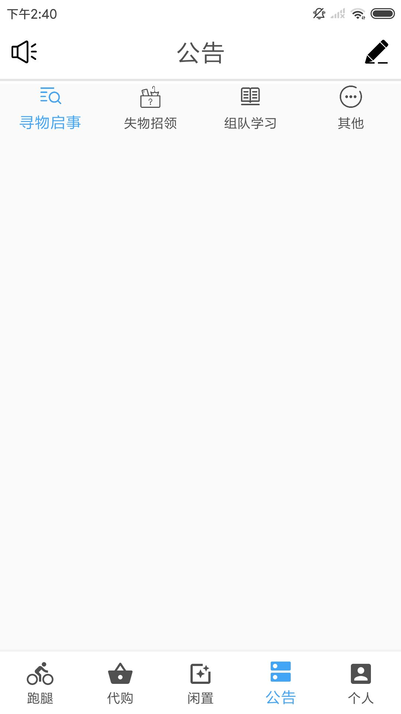

Android Studio中BottomNavigationView的使用，底部导航和顶部导航嵌套使用
创建底部导航栏
1.创建五个Fragment
2.在res里创建type为menu的menu.xml
3.在menu.xml里拖五个Menu item，title为导航栏各个页面的名字，icon为导航栏的各个图标
4.在res里创建type为navigation的navigation.xml，GRAPH里添加创建的五个Fragment
5.将menu.xml中每个menu item的id和GRAPH五个Fragment的id要相同
6.在activity_main.xml中拖一个BottomNavigationView出来，连上左右下的constraint约束
7.将BottomNavigationView的Attribute中的menu选中我们创建的menu
8.再拖一个NavHostFragment出来，选中我们创建的navigation，脸上上左右的constraint约束，下约束为BottomNavigationView的top
9.因为有五个item，为BottomNavigation item数量的上限，此时只显示第一个item的icon和title
要在BottomNavigationView的Attribute中加上：
1
| app:labelVisibilityMode="labeled"
|
使item始终可见
10.在MainActivity中添加代码：
1
2
3
4
5
| final BottomNavigationView bottomNavigationView = findViewById(R.id.bottomNavigationView);
NavController navController = Navigation.findNavController(this,R.id.fragment);
AppBarConfiguration configuration = new AppBarConfiguration.Builder(bottomNavigationView.getMenu()).build();
NavigationUI.setupActionBarWithNavController(this,navController,configuration);
NavigationUI.setupWithNavController(bottomNavigationView,navController);
|
创建顶部导航栏
1-9同理上面的底部导航栏的创建
10.创建一个activity关联想要添加顶部导航栏的Fragment，添加相同代码：
1
2
3
4
5
6
7
8
9
10
11
12
13
14
15
| @Override
protected void onCreate(Bundle savedInstanceState) {
super.onCreate(savedInstanceState);
setContentView(R.layout.想要添加顶部导航栏的Fragment);
if (savedInstanceState == null) {
getSupportFragmentManager().beginTransaction()
.replace(R.id.container, 想要添加顶部导航栏的Fragment.newInstance())
.commitNow();
}
final BottomNavigationView bottomNavigationView = findViewById(R.id.顶部导航栏的id);
NavController navController = Navigation.findNavController(this,R.id.想要添加顶部导航栏的Fragment的NavHostFragment的id);
AppBarConfiguration configuration = new AppBarConfiguration.Builder(bottomNavigationView.getMenu()).build();
NavigationUI.setupActionBarWithNavController(this,navController,configuration);
NavigationUI.setupWithNavController(bottomNavigationView,navController);
}
|
效果如下：
